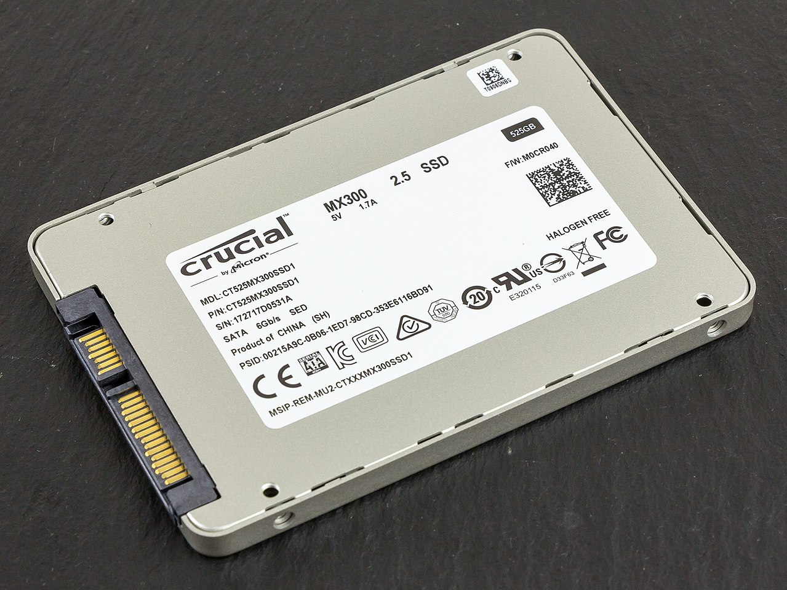

La unidad de estado sólido, la o el SSD (acrónimo inglés de Solid State Drive), también llamado a veces incorrectamente disco de estado sólido pues carece de disco, es un tipo de dispositivo de almacenamiento de datos que utiliza memoria no volátil memoria no volátil, como la memoria flash , para almacenar datos, en lugar de los platos o discos magnéticos de las unidades de discos duros (HDD) convencionales.1
En comparación con los discos durostradicionales, las unidades de estado sólido son menos sensibles a los golpes al no tener partes móviles, son inaudibles, más livianas y poseen un notablemente menor tiempo de acceso y de latencia, lo que se traduce en una mejora sustancial en el rendimiento, en cuanto a la carga de font color="blue"> sistemas operativos, software y transferencia de datos.  En contrapartida, su vida útil puede ser inferior, ya que tienen un número limitado de ciclos de escritura, pudiendo producirse la pérdida absoluta de los datos de forma inesperada e irrecuperable. Sin embargo, por medio del cálculo del tiempo medio entre fallos y la administración de sectores defectuosos dicho problema puede ser mitigado razonablemente.
Las unidades SSD pueden usar la misma interfaz SATA que los discos duros, por lo que son fácilmente intercambiables sin tener que recurrir a adaptadores o tarjetas de expansión para compatibilizarlos con el equipo, pero también la interfaz PCIe para obtener velocidades mayores de lectura/escritura, pudiendo superar los 10 GB/s, si bien esto depende de la generación de PCIe que utilice y otros factores de su diseño.2 Aunque en sus inicios el formato físico más común de estas unidades era el de un disco duro estándar de 2.5 o 3.5 pulgadas, actualmente existen otros formatos de consumo en uso como mSATA o M.2, y otros empresariales como NF1.34
A partir de 2010, la mayoría de las SSD utilizan memoria flash basada en puertas NAND, que retiene los datos sin alimentación eléctrica. Para aplicaciones que requieren acceso rápido, pero no necesariamente la persistencia de datos después de la pérdida de alimentación, las SSD pueden ser construidos a partir de memoria de acceso aleatorio (RAM). Estos dispositivos pueden emplear fuentes de alimentación independientes, como baterías, para mantener los datos después de la desconexión de la corriente eléctrica.
Se han desarrollado y están disponibles en el mercado dispositivos que combinan ambas tecnologías, discos duros con memorias flash, en una única unidad, que se denomina disco duro híbrido (HHDD o Hybrid Hard Disk Drive), con la intención de mejorar la velocidad pero manteniendo la capacidad del disco duro, y a precios inferiores a los de estado sólido. Se logra así una solución de compromiso con una tasa de transferencia mayor que la de un disco duro convencional pero menor a la de un SSD.
Al no tener piezas móviles reduce drásticamente el tiempo de acceso, latencia y otros, diferenciándose así de los discos duros electromagnéticos.
Al ser inmune a las vibraciones externas, es especialmente apto para vehículos, computadoras portátiles,6 etcétera. Historia SSD basados en RAM
En 1978, Texas memory presentó una unidad de estado sólido de 16 KiB basada en RAM para los equipos de las petroleras. Al año siguiente, StorageTek desarrolló el primer tipo de unidad de estado sólido moderna. En 1983, se presentó el Sharp PC-5000, haciendo gala de 128 cartuchos de almacenamiento en estado sólido basado en memoria de burbuja. En septiembre de 1986, la empresa Santa Clara Systems presentó el BATRAM,7 que constaba de 4 MiB ampliables a 20 MiB usando módulos de memoria; dicha unidad contenía una pila recargable para conservar los datos cuando no estaba en funcionamiento.